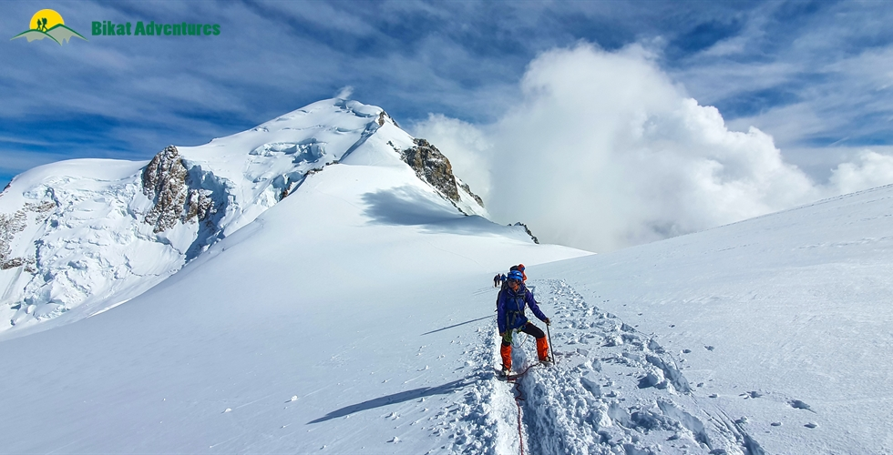
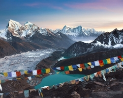
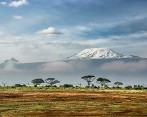

Mont Blanc Expedition
Highest peak of the Alps and Western Europe
Available Batches
Brief Description

Brief Itinerary
Day 1 Land in Geneva (375M) and head to Saint Gervais Les Bains (580M)
Day 2 Saint Gervais les Bains (580M) to Tête Rousse Refuge (3,167M) via) and Nid d’Aigle (2,362M)
Day 3 Tête Rousse Refuge (3,167M) to Refuge du Goûter (3,835M)
Day 4 Refuge du Goûter (3,835M) to Mont Blanc Summit (4,810M) to Refuge du Goûter (3,835M)
Day 5 Refuge du Goûter (3,835M) to Saint Gervais les Bains (580M) via Tête Rousse Refuge (3,167M), Nid d’Aigle (2,362M)
Day 6 Saint Gervais les Bains (580M) to Geneva. Leave from Geneva (375M) by the early evening
Day 7 & 8 Reserve Days
Detailed Itinerary
Day 1 Land in Geneva (375M) and head to Saint Gervais Les Bains (580M)
Distance: 70 km (bus ride)
Duration: 1.5-2 hours
There are few things better than starting a climbing trip in the beautiful surroundings of Switzerland. One of the many towns settled along the banks of Lake Geneva, Geneva is the second most populous city in Switzerland. A global city and a financial hub, it is home to the headquarters of the United Nations. Geneva is not short on things to see and do. Plus, to look at climbing gear in these lands, the place from where most of what we use for our climbs comes from, invokes nothing less than a childlike sense of awe.
After landing in Geneva, we take an early evening bus to Saint Gervais Les Bains – a small village with the traditional charm much sought after in the Alps. The theme of this entire expedition is absolutely-gorgeous-jaw-somewhere-on-the-floor- kind of beauty and that starts today – on Day 1. The 70 km bus ride between Geneva to Saint Gervais takes us through the most scenic route with the full feel of passing through the kind of beauty that defines Switzerland crossing the border over to France – the hour and a half on this bus ride goes by in a wink!
Day 2 Saint Gervais les Bains (580M) to Tête Rousse Refuge (3,167M) via) and Nid d’Aigle (2,362M)
Saint Gervais les Bains to Nid d’Aigle:
Distance: 12kms
Duration: 1-1.5 hour (Tram Ride)
Nid d’Aigle to Tête Rousse Refuge:
Distance: 2.5 kms (trek)
Duration: 3-4 hours
The summit of Mont Blanc, from the Goûter Route, takes us through three huts on the mountain. Camping on Mont Blanc is forbidden – one has to pre-book accommodation in the huts months in advance due to their limited capacity. The first of the three huts is Nid d’Aigle at an altitude of 2,362M. To get here is only a matter of one tramway ride through high mountains, deep valleys, and a 50-degree slope on which the tram puffs tirelessly up from Saint Gervais all the way to 100M below the hut. Once off the tram, a muddy trail takes us straight from the tiny tram station to the spaceship-like hut that is Nid d’Aigle. A famous spot in the winter for skiers of all levels, this hut is a popular destination all year round for all kinds of people – families out for a one-day adventure, trail runners who want to run up to the next hut, people there only for a meal with a view - the hut is a constant bustle between the first tram to when it is time for the last tram to take people down to their respective towns.
The tram ride as well as the hut itself give us the most magnanimous view of Mont Blanc which stands high dressed in an all-white robe in a valley still bursting with warm colors. Nid d’Aigle has a capacity of 16 beds, a functioning kitchen that serves you 3-course meals if you opt for food during your stay there, running water, an assortment of desserts, and beer! The luxury of the huts on this route is unmatched!
Although we have gained a fair bit of altitude already, we do not stay a night here. We continue on to the next hut which is Tête Rousse at 3,167M after a short break at Nid d’Aigle. Acclimatization should not be a problem since we haven’t done anything physically strenuous. The hike up to Hut 2 is also fairly comfortable and can be covered at our own pace since we have a lot of time on our hands. The only thing to remember is that we need to get to the hut before 5 PM to keep our reservation at the hut valid.
We cover the 700M elevation gain from Nid d’Aigle to Tête Rousse in close to 2.5kms. Because we are carrying our backpacks with all the personal equipment, clothing, and personal ration, we should be able to cover this distance in not more than 4 hours. The trail itself is muddy, marked, broad, and extremely comfortable slithering up gradually at first on a straight path. The last 200M gets steeper as we now zig-zag up a rocky pinnacle standing vertically above the gorge with a straight view down to the entire valley with all its villages, rivers, and greens.
After a 3-hour trek, we reach the Tête Rousse check post. Right after the check post, a short traverse on a glaciated plateau brings us straight to Refuge du Tête Rousse. We are now in boulder territory – all rocks and moraine with not a single strand of green to be seen.
Tête Rousse has a capacity of 72 people in the indoor dormitories and a few tents outside which can house some more people. There is no running water at this hut because the cold clogs up pipelines. Mont Blanc looks even more imposing from this height – we can even spot the third hut i.e. Refuge the Goûter as a tiny speck on the top of a vertical face of mud and boulders which is our trail for tomorrow.
We can also see the Grand Couloir from here, one washed-out section that runs horizontally on this otherwise vertical route. But we still have a day to worry about these sections. For now, enjoying the hut with all its luxuries and the glorious sunset from this altitude is the top priority. The days in these regions are really long and hence sundown is very late - sometimes as late as 08:30-09:00 PM.
Day 3 Tête Rousse Refuge (3,167M) to Refuge du Goûter (3,835M)
Distance: 1.1 km
Duration: 3-4 hours
Today we cross the Grand Couloir, also called the Death Couloir for it single-handedly being responsible for the highest number of fatalities on the mountain. Its funnel-like structure makes this entire gully prone to continuous rock fall with rocks crossing the horizontal traverse path at high speed making the smallest rock a massive risk for climbers crossing this section of the climb. The frequency of rock fall is lesser when the temperature is colder. It’s, hence, safer to cross during the first few hours after sunlight with the risk substantially increasing after 10 AM.
After breakfast, which is at 0730 AM, we pack up our bags and make a move towards Goûter Hut by 0830AM. In case you need to leave any personal belongings behind at Tête Rousse, you can store them in the equipment room in a box and collect them on your way back.
We make it to the Grand Couloir within 45 minutes of starting our day. The initial patch till the couloir is rocky but a gradual climb over the moraine. There is one spot before the couloir and one in the middle of the crossing to take shelter from rock fall in case you experience a shower during your traverse. Listen to any sound of rocks coming down, and start towards the other side carefully. There is a gap after each shower which may be the best time to cross over. This path is narrow and stands over loose rocks, it is important to take extreme caution so as to not slip off or injure yourself.
Once on the other side of the couloir, it is now a completely vertical climb over huge boulders. There are orange blobs painted on the rocks to mark out the route. The 85-degree climb from here demands scrambling. Three-point contact climbing is mandatory. A single misstep would result in a straight drop down onto the glacier on which rests Refuge du Tête Rousse.
The entire 600M climb from here on is a vertical climb over these boulders until we reach an abandoned hut. From the hut, we might need to change into our snow boots and crampons to traverse a glaciated path that leads you straight into Goûter Hut. It is a horizontal path with a drop on each side. A rope is already fixed on this section all the way to the hut for assisted traverse. We should reach our destination for the day in time for lunch. Sunsets from this hut are not to be missed!
The evening and the dining hall are filled with stories of attempts from the previous day! There is an updated weather report and weather forecast put up on the notice board in the dining area of the hut. The weather forecast is updated each day and is extremely accurate. It should be referred to in order to take a fair decision on your summit push and to be aware of what to expect during the climb.
Day 4 Refuge du Goûter (3,835M) to Mont Blanc Summit (4,810M) to Refuge du Goûter (3,835M)
Distance: 6.5 km
Duration: 8-10 hours
Today is going to be a long day. Everyone making their summit attempt from Goûter today huddles up in the dining hall for a 2 AM breakfast. We gear up and leave by 3 somewhere in the middle of a streak of headlights heading up the mountain in the dark. We rope up from the very beginning. A small 20M climb right outside the hut gets us on the ridge we used to get to the hut the previous day. We turn to the right to walk on the same ridge that continues on for a short distance until we make a left to enter a crevasse-ridden snowfield. It is a comfortably steep climb all the way to Dome du Goûter at 4,300M post which the trail goes down for a bit till we get to Col Du Dome at 4,250M. From the Col, the trail slopes quickly up to Vallot Hut (4,362M); it is a steep climb.
Vallot Hut is an abandoned shed with no amenities. It can be used to take shelter for rest or to take sanctuary in bad weather conditions like snow storms and whiteouts. From Vallot Hut we hit two humps – first the Grand Bosse and then the Petite Bosse to head towards the Tournette Ridge which stretches out to the summit of the highest peak of the Alps. The last two hours of the climb are on slender knife ridges with a straight drop on both sides. Heavy winds make the climb on these sections even more precarious. Another challenge to consider on the ridge is the complexity and coordination of movement between climbers going up and climbers coming down since it is a single path with zero space on either side to give way.
It should take us 6-7 hours to get to the top. With the thick blanket of clouds rolling out under you and over all the other peaks in the vicinity, it is quite an exhilarating feeling to stand on the top of this mountain. The mountain really makes it worth your while!
Coming down on these slender ridges is equally challenging. The crevasse field becomes a little easier to traverse, though, in daylight.
Day 5 Refuge du Goûter (3,835M) to Saint Gervais les Bains (580M) via Tête Rousse Refuge (3,167M), Nid d’Aigle (2,362M)
Refuge du Goûter to Nid d’Aigle:
Distance: 4 kms
Duration: 5-6 hours
Nid d’Aigle to Saint Gervais les Bains:
Distance: 12 kms
Duration: 1-1.5 hours
We follow the same path to come down from Goûter all the way to Nid d’Aigle. We can make a quick stop at Tête Rousse in case you had left behind your belongings here on our way up. Coming down the vertical boulder section demands extreme caution. Remember, that we need to cross the Grand Couloir again today and it is best crossed in the early hours of the day, so leave from Goûter accordingly to reduce risk. After the initial boulder sections and the couloir, it is a comfortable trek down to Nid d’Aigle.
We can take a break at the hut if required. The only thing to keep a watch on is to head down to the tram station before it is time for the last tram to take off. We should be in our hotel rooms at Saint Gervais before sundown.
Day 6 Saint Gervais les Bains (580M) to Geneva. Leave from Geneva (375M) by the early evening
Distance: 70 km (bus ride)
Duration: 1.5-2 hours
We take the bus back into the city of Geneva latest by early afternoon depending on the bus timings.
The expedition ends here but not before some much deserved celebration!
Day 7 & 8 Reserve Days
The cost of these days is not included in the overall cost. Following is the additional expense (which includes accommodation and meals) in case we need to use a reserve day. The additional expense per day might vary based on where we use the buffer day (as indicated below)
Reserve Days (per day depending on location)
Nid d’Aigle - 4000 INR
Tête Rousse - 9300 INR
Goûter - 10600 INR
Saint Gervais - 6200 INR
What's Included
- All travel cost from Geneva pick-up point to Geneva drop-off point (including buses and tram expenses – pre-booked)
- Breakfast & Dinner (pre-booked) in the mountain huts on Mont Blanc
- 3 nights accommodation in mountain huts (pre-booked) on Mont Blanc
- Safety Equipment (common) including static rescue rope, seat harness, carabiners, pulleys & other items used for climbing
- Mountaineering certified and First Aid certified expedition guide
- Guiding cost
- 2 nights accommodation at Saint Gervais les Bains (pre-booked)
- 1 Night hotel stay in Geneva on Day 1
- Geneva Airport Pickup
- Climbing Gear Rental Kit
- Rental Kit for personal technical climbing equipment like ice axe, crampons, climbing boots, helmet, harness, carabiners
What's Not Included
- International flight cost
- Visa cost
- Cost of travel and health insurance
- Accommodation in Geneva (except on day 1)
- Cost of food on travel days
- Lunch on any of the days
- Any expense of personal nature
- Any expense not specified in the included list
- Additional Cost per Reserve Day (in case they are used)
Are you Eligible for this Adventure?

BRS Level Required
This makes it mandatory for you to have high-altitude experience of preferably multiple treks marked at level 6 on the BRS. The altitude, the terrain and the nature of the climb demand a certain level of skill and a need for you to be aware of how your body reacts to the various features of high altitude environment.
If you do not know what level of BRS trek would suit you best, worry not! Fill out this Form:

we will send you a progression chart to help you comfortably get out of your comfort zone in order to level up and ultimately reach your highest potential in the big, bad world of outdoor adventure.
Packing List
This is a list of essential items for individuals doing the trek with Bikat Adventures. This list contains only those items which the participants are required to bring with them. The list excludes those items which are provided by Bikat Adventures on the trek. We have divided the items into five categories. All the items in the list are essential except for those marked as optional.
Trekking Gear
- Ruck sack bag with rain cover. Qty -1
- Day Pack Bag - Recommended for treks with summit day
- Head Torch with spare Batteries. Qty -1
- U V protection sunglasses. Qty -1 Here is how you can choose the best sunglasses for trekking.
- Water Bottles: 2 bottles of 1 liter each
Footwear
- Non-skid, deep treaded, high-ankle trekking shoes Qty -1
- Pair of light weight Slipper/Sandals Qty -1
Clothing
- Quick Dry Warm lower or Track Pants. Qty - 2
- Full sleeves T-shirts/ Sweatshirts. 1 for every 2 days of trekking
- Pair of thick woolen socks. 1 pair for every two days of trekking
- Thermal Body warmer Upper & Lower. Qty-1
- Undergarments. Qty - 1 for every day of trekking
- Warm jacket closed at wrist & neck .Qty-1
- Full sleeves sweater. Qty -1
- Rain wear ( Jacket & Pants ) . Qty-1
- Pair of waterproof, warm gloves. Qty-1
- Woolen cap. Qty-1
- Sun shielding Hat. Qty -1
Toiletries
- Personal toiletries kit (Small Towel, Toilet paper, paper soap, Bar soap, toothbrush, toothpaste, cold cream, etc.)
- Sun screen lotion small pack. Qty -1 Here is your Sun Protection 101 to stay safe in the bright sunny outdoors.
- Lip Balm small pack. Qty-1
Utensils
- Small size, Light weight & Leak proof lunch box. Qty-1
- Plate. Qty- 1
- Spoon.Qty-1
- Tea/Coffee (plastic) Mug.Qty-1
Miscellaneous
- Camera (Optional)
- Carry your medicines in plenty in case you have any specific ailment. Consult your doctor before joining the trek.
- Dry fruits, Nuts, Chocolate bars (Optional)
Technical Mountaineering Gear
- Mountaineering Boots: Suitable for rock and icy terrain
- Crampons: 1 set that fits your climbing boots
- Ice axe: 1 Non-technical ice axe
- Helmet: 1 climbing helmet
- Harness: 1
- Gaiters: 1 set
- Headlamp: 1 + 1(spare) with batteries
- Trekking poles: 2 (as per your requirement)
- Carabiners: 2 (plain type)
(P.S.: In case you do not own this equipment, you may rent all these items from shops in Saint Gervais les Bains for the length of the expedition. It is best to pre-book your rental equipment on their websites and pick it up at the store when we are there. The entire kit costs approximately 25 Euros per day. Some rental shops in Saint Gervais les Bains which allow for customized pre-booking are.:
1. https://blanc-sport-saintgervais.com/en/
2. https://unlimited-saintgervais.com/en/
Frequently Asked Questions
Mont Blanc is a level 7 trek on the Bikat Rating Scale . This makes it mandatory for you to have high-altitude experience of preferably multiple treks marked at level 6 on the BRS. The altitude, the terrain and the nature of the climb demand a certain level of skill and a need for you to be aware of how your body reacts to the various features of high altitude environment.
If you can Jog/Run for 5 kms in 25-30 mins, you are ready to take on this trek. Once a week, you can practice running 10 kms in an hour or so to improve your endurance further. In addition to this, you can also add resistance workouts to your schedule like squats, lunges, push-ups etc.
If you cannot do the above, there’s no need to worry. It is important to remember that it’s all about practice. Get on a training schedule and we can assure you that you will meet these standards in a matter of a few months.
The climb demands a few basic mountaineering skills; using an ice-axe, methods of self-arrest, roping up, working together as a team, ascending and descending on steep gradients, gear assisted ascent, climbing techniques and using technical climbing gear.
The minimum age limit is 16 years. However, minors between 16 to 17 years of age should be accompanied by their parents/ guardians. If you are above the age of 60, kindly carry a medical certificate from your doctor that deems you fit for adventure activities like trekking.
Mont Blanc’s slender ridge lies to the Western end of the Alps – the region known to house Europe’s finest collection of glaciated mountains.
The peak straddles the border of Italy and France (also, stretches into Switzerland) and stands proud and loud in the Graian Alps.
From starting in Switzerland to the tram ride to the European vistas to the mixed terrain of the mountain, the nature of the climb, the people you meet on the way, everything about this climb is worthy of being listed as a highlight. If you want to read our personal experience on the mountain, check out The Slender Ridge to Mont Blanc: Summit Story of my Climb to the Highest Peak in the Alps .
Mont Blanc is the highest peak of the Alps, highest of Western Europe and according to the Hackett list, highest in all of Europe. It's peculiarly challenging terrain interspersed with a luxurious climbing experience make Mont Blanc a must do. It is one of the Seven Summits putting it high on the list of all climbing enthusiasts. It is also the birthplace of modern mountaineering.
Mont Blanc’s earned a wicked reputation of being one of the deadliest mountains. Estimates put the average death toll on the mountain around 100 each year (according to an article in Outside Magazine). What makes the White Mountain so deadly is not its height or technical climbing but the easy access and a flawed tagline which says ‘it is a mountain one can simply walk up on – it is, in fact, anything but!
Mont Blanc is meant for experienced trekkers only. While it is true that Mont Blanc is not overly technical but to climb it requires extreme levels of physical and mental preparedness, knowledge of mountaineering equipment, and skills of navigating the high-altitude terrain with all its challenges such as rock falls, vertical ascents, crevasses, knife ridges, reading the weather, knowing acclimatization techniques and much more. A climb up Mont Blanc definitely warrants previous experience in mountaineering.
The best time to climb Mont Blanc is between June and September.
Camping on Mont Blanc is not allowed. Accommodation will be in mountain huts with dormitory style beds. Clean blankets and sheets are provided by the huts and they are enough to keep you warm at night. However, it is recommended you carry a thin liner for hygiene purposes.
Like any other high-altitude mountain, weather is unpredictable here as well; in fact, Mont Blanc is famous for fast-changing weather. Fortunately, each hut on the route puts up an updated weather forecast report each day which is extremely accurate and should be taken into account in order to plan any movement on the mountain.
It is not overly technical but requires previous experience of high-altitude mountains and a fair knowledge of mountaineering equipment and techniques for a safe climb. It is a strenuous climb and requires the use of technical equipment. Running into bad weather is another big challenge to be considered.
The trek starts from Nid d’Aigle which is the first of the three huts on Mont Blanc. We reach Nid’Aigle by taking a bus from Geneva to the commune of Saint Gervais les Bains and then a tram from Saint Gervais les Bains to Nid d’Aigle.
As luxurious as the accommodation on this mountain is, there is no wifi available on the huts or anywhere on the mountain along the way. As long as you are in direct line of Chamonix down in the valley, you might get network on the mountain in case you have your international roaming activated.
You will find ATMs in the last town at Saint Gervais Les Bains or La Fayet.
Mont Blanc is a Geneva to Geneva trip. This means that your travel to the base of the trek i.e. Nid d’Aigle is included in the trek cost.
Expect to reach Geneva latest by early afternoon depending on the bus timings.
Geneva is the second most populous city in Switzerland. A global city and a financial hub, it is home to the headquarters of United Nations. Geneva is not short on things to see and do. Close to Saint Gervais les Bains is the popular commune of Chamonix which is the hub of adventure sports in the Alps and is most famous amongst skiers. Year round cable cars take visitors to the most popular slopes in the Alps. For more information, read Things to Do in Geneva .
While the common safety gear like static rope, pulleys and carabiners will be carried by the expedition guide, personal climbing gear will not be provided for this trek. Technical climbing gear like snow boots, crampons, harness, ice axe etc. will have to be brought by the trekker. In case you don’t own this equipment, there are shops in Saint Gervais les Bains to rent out your gear.
We do not have a rental service available for this trek.
There are several reasons for this:
1. The amount of weight a passenger can carry on an international flight is capped at a certain number depending on the flight operator. It does not make sense to carry our rental equipment all the way from India into another country.
2. Since this is an expert-level climb, we assume the climbers may have their personal equipment.
3. There are options to rent out climbing equipment in towns close to the mountain which saves the effort of lugging them around before and after the climb in case you may want to extend your trip a few days before or after the climb to explore the region.
We do not have a rental service available for this trek.
We do not have a rental service available for this trek.
For a detailed list, check the Packing List section on this page.
Yes. You can rent out gear and equipment from shops in Saint Gervais les Bains. Some of them have websites from where you can pre-book your rental equipment and pick it up at the store when we are there. The rental kits include:
- Montaineering boots
- Crampons
- Ice axe
- Helmet
- Harness
- Gore-Tex clothing
- Gaiters
- Headlamp
- Telescopic poles
No, there is no option to offload your bag. Since it is an expedition, each climber carries their own weight all throughout.
You may leave the extra luggage at the hotel in Saint Gervais Les Bains. It may come at a cost depending on hotel policy.
The meals are pre-booked with your accommodation when you make a booking with us. The cost of the pre-booked meals is included in your trek cost. The meals on the huts are extremely lavish 3-course meals with a soup, the main course and a dessert all of it with a lot of cheese on the side! The trek cost includes two meals a day – breakfast and dinner. If you want anything extra, the kitchen in all three huts is open all day where they serve very specific items (on the menu) which remain the same across all huts. These are billed separately on your personal tab.
All the huts have proper toilets. Since it is a dormitory style accommodation, these are common toilets. Water may or may not be available in the huts depending on the temperature. Freezing temperatures tend to clog the pipelines.
In case you get your period on the trail and don’t have sanitary napkins, our trek leaders can provide them to you. If you need any other kind of assistance, you can let our trek leaders know. Irrespective of gender, our leaders are gender sensitised and equipped to assist you in any way you need them to.
Our team carries a first aid kit and all the basic medicines required during the trek. They are equipped to be the first responders in case of any injury or health-related issues. For higher expeditions, we also carry a HAPO Bag and oxygen cylinders to tend to any altitude-related health conditions.
There are charging points available in the common area of all huts. However, it is better to carry backup power supply of your own given the number of people at the huts and the frequency of power cuts on the mountain.
You original passport, a copy of your Passport and Visa, ID Proof and Medical Certificate are the mandatory documents required for this trek. (Soft copies for all of these are to be sent to us & originals should be on your person while on the trek.)
Yes, insurance for any high-altitude activity is highly recommended to cover for the cost of rescue, evacuation and any other emergency service required as well as to cover for medical cost in case of injury or illness during the trek. You can buy it on your own. If you need any help choosing which ones to buy, you can get in touch with us.
As of 2023 there are no permits issued or required to climb Mont Blanc. However, there is conversation around putting in place such a system to control the number and quality of climbers on the mountain for reasons of safety.
Yes, you will receive e-certificates (of completion) after the trek. It will bear your name, the trek, and the maximum altitude you achieved on the trek. In case you were unable to finish the trek, you will get a certificate of participation.
On completion of the trek, the certificate will show up on your dashboard on our website. You can download it directly from there.
Yes, since Mont Blanc is at the border of France and Italy, you will need to apply for a France Visa to be eligible for this climb and you will need a valid Passport to apply for the Visa. The French Visa process is managed by VFS Global and is fairly straightforward. You do not need any agents to go through the process. VFS takes a fee to mediate and makes it a seamless experience. For more information, read Simplifying the Visa Process for Climbing Mont Blanc .
For Indian nationals, applications for the visa are accepted no sooner than 6 months before the date of travel. The entire process from application to receiving of Visa might take anywhere between 15 days to 60 days. Start your process accordingly. Rules may differ based on your home country. The information is available online easily.
For more details, read our A Comprehensive Guide to Climbing Mont Blanc .
You will need two kinds of insurance for the trip:
1. Travel Medical Insurance: To cover accident, injury or sickness during your travel and stay in the host country. The cost will depend on the number of days you plan to stay in the host country including travel days.
2. Insurance to cover your climb: To cover cost of rescue if need be, in addition to medical and health coverage in case of sickness and injury during your time on the mountain. The cost depends on the service you choose, the number of days you are exposed to the risk and the altitude of the mountain of choice. There are adventure insurance companies based in India but it would make sense to get insured by a company which might have better reach in the region of travel for speedy service.
Firstly, Mont Blanc is the highest peak of the Alps, the highest in Western Europe and also, one of the Seven Summits which means that it is (according to one of the lists) the highest mountain of Europe - its titles add to the charm of the mountain.
Secondly and more importantly, we believe that the Himalayas are GREAT and nothing can beat the magnanimity of the mountains in this incredible range, but exploring a different mountain range has so much to offer in terms of perspective. To indulge in the same sport in a different setting makes the connection with the sport itself stronger because of the learning experience.
By Mid March. Since no camping is allowed on Mont Blanc, accommodation on the days of the trek is to be in the huts built on the mountain. Given that Mont Blanc is a very popular mountain amongst climbers, these huts with limited number of beds get booked very quickly. We only accept bookings till the time there is availability of a bed in the huts on our dates of arrival at each of these huts. In the absence of securing a bed for a climber for the night, climbing the mountain is simply not possible.
A Basic Mountaineering Course certification from one of the five recognized mountaineering institutes in India is a minimum requirement to join our team. Our field experts are also trained in basic medicine and first-aid response. We also conduct on-ground training for our staff once a year as a refresher for old skills and to learn some new ones. During this training that we call APW (Adventure Professional Workshop), our leaders learn close to 25 topics and techniques of rescue which are not covered in the BMC and AMC courses. For practical training, we simulate on-ground situations to prepare them for quick thinking and quick response during emergencies.
We follow a rigorous regime of hiring and training our experts on the field. Each trek leader is a certified mountaineer with years of experience in the field. The interview process to bring a trek leader on-board is close to 6 months long where we assess various skills as well as personality traits of an individual. They also go through an on-field assignment as part of the hiring process. Trek leaders also progress in time from leading easier treks before advancing to the more difficult ones where the stakes are higher. For detailed information on our selection process, please visit Forerunners - The Making Of A Trek Leader
It absolutely is. We recognize, value and embody the ideology that the world of outdoor adventure can benefit from diversity. We make it our mission to create outdoor spaces as equally accessible and safe for all genders as possible. We also encourage women leaders in the outdoors and all of our staff (irrespective of gender) is gender sensitised.
Our batch sizes for Mont Blanc are capped at 6 with the trek leader to trekker ratio of 1:6.
In addition to their qualification, our trek leaders are trained to tackle any and all kinds of sudden conditions that may present themselves on ground. During our recce stage, we study the trail in great detail and map out rescue routes before opening it up for our trekkers.
We mobilise road rescue efforts where our trek leaders bring the person to be rescued down to the trailhead of the trek from where a car can take them to the nearest healthcare facility. The cost of rescue is not covered in the trek fee that we charge. It must be borne by the participant. However, if you opt for the insurance the cost of rescue operations can be claimed from the Insurance company on production of valid proof e.g. doctor’s prescription & hospital bills etc. Please note that Bikat Adventures is only a facilitator & not a party in the Insurance policy. You need to raise the claim request directly with the Insurance company. Bikat Adventures is not responsible for any rejection of the claim. You can call the insurance provider directly for any clarifications related to the Insurance policy. Although not mandatory, we recommend buying the insurance.
All the gear used on our treks and expeditions is tried and tested, maintained for good quality and is overall top notch in quality and condition. We are continually looking to obtain the best of everything there is in the market so as to ensure optimum safety.
That will depend on the nature of your medical condition. Do give us a call, and one of our people will help you understand what is best for you. If not this, we are sure there would be plenty of other options you can choose from our vast portfolio to pick as your next adventure.
This does not apply to Mont Blanc since camping is not allowed on this mountain.
But as a general rule, we have rolling camps on all our trails. To know why we are strictly against the concept of Fixed Camping, read Reasons to Ban Fixed Camping in Himalayas
This does not apply for Mont Blanc since camping is not allowed on the mountain.
But in general, this is a complex question and has a compound answer. The simple response to why we are against fixed camping is that it is bad for the environment which we dearly love but if you are interested in a more detailed response to this question, please read Reasons to Ban Fixed Camping in Himalayas
There are a number of measures that we take to prevent overcrowding on some of the most popular trails. Some of them are capping our group size at 15, capping the number of trekkers on a trail to 250 per season, constantly looking for newer trails and routes to spread the crowd around and providing incentives to our trekkers to try unexplored territories with us. We put in place the system of dynamic pricing, which is the first of its kind in the trekking industry, which incentivises trekkers to choose less crowded trails by offering higher discounts. We have noticed, since we started this system, that this has helped in a big way to spread out the crowds between trekking routes. We are also going international so as to relieve some of the stress on the Himalayan landscape as well as explore newer ranges and design newer experiences for our community. If you want a more detailed description of all our measures in this regard, please read Simple solutions to overcrowding on Himalayan Treks
This does not apply to Mont Blanc since proper toilets are available in the huts on this mountain.
But in general, for other trails, some basic things to remember while using a dry toilet are: do not use water, do not dispose of anything non-biodegradable inside the pits, carry your own roll of toilet paper and remember to cover up after yourself to leave a clean toilet for your fellow trekkers. Everything else is much the same like using an Indian style home toilet!
Most wet wipes are not biodegradable which means it could take 100 years or more for them to decompose – not the best thing if you are trying to ‘Leave No Trace’, right?
This is quite a tricky situation but not a hopeless one. Since most of our sanitary waste is not biodegradable, we recommend that you pack your pads/tampons neatly, store it in a zip-lock bag and bring it back down with you where there are better options to dispose of them. In case you do not have zip-lock bags, ask our trek leaders for them and they should be able to provide them to you.
On Mont Blanc, there are dustbins in all huts to dispose of any waste. The waste gets airlifted from each hut and gets flown down to the nearest village. It is however best to carry your own waste down the mountain.
This does not apply to Mont Blanc since we stay in huts and have all our meals there.
On making the payment, you will receive a booking confirmation along with the packing list and a copy of the undertaking form via email. You will subsequently receive emails detailing documents required, how to prepare physically and mentally for the trek, information on pick-up location on the first day etc. Please add [email protected] in your trusted emails list to make sure our emails don't go to your spam folder.
A Whatsapp group will be formed a few weeks before departure. Members from our team are on those groups as well. Feel free to seek any clarifications you require in regards to the trek, on the group itself. Updates related to transportation/pickup point/pickup timing, accommodation etc. will be shared on the Whatsapp group as well.
Yes, we create a Whatsapp group a few weeks before the departure date so that the flow of information remains smooth and transparent.
Yes, it is one of the mandatory documents you will need to submit before the trek starts. The soft copy is to be sent to us & the original should be on your person while on the trek.
Yes, we will provide you an undertaking form through email which will need to be filled up by you and submitted to us post booking.
Why Bikat?

Small Group Size
Our batch sizes are capped at 15 for smaller treks with the trek leader and trekker ratio of 1:8. This ratio, in our years of experience, has proven to deliver the best trekking experience for individuals as well as groups. Capping the size of the group ensures individual attention to each trekker so that no signs of distress or need during the trek go unnoticed. It also helps to form a more cohesive cohort with better group energy which helps define the rhythm and pace of days on the trek. As you go higher up on the BRS scale, since the stakes are higher, expeditions have an even smaller group size with the ratio of expedition leader to climber set at 1:2.

Qualified Expedition Leaders
We follow a rigorous regime of hiring and training our experts in the field. Each trek leader is a certified mountaineer with years of experience in the field. In addition to their qualification, they also go through practical and situational training to tackle any and all kinds of sudden conditions that may present themselves on the ground. Being unpredictable is the core nature of the mountains but being ready for any circumstance as best as possible is a controllable asset that we try to nurture. Our field experts are also trained in basic medicine and first-aid response. Watch: Forerunners - The Making of A Trek Leader At Bikat Adventures

Guided Progression
Since Bikat Adventures is a learning-based organization, we help you climb up the ladder of difficulty within the sphere of outdoor adventure systematically. Our on-ground training modules are designed to handhold you through the upskilling process so that you are ready to take on bigger challenges.

Equipment Quality and Check
All the gear used on our treks and expeditions is tried and tested, maintained for good quality, and is overall top-notch in quality and condition. We are continually looking to obtain the best of everything there is in the market so as to ensure optimum safety.

Support Systems
Along with the staff you see on-ground, we have a team of superheroes working in the background to give you the best experience possible. Our background team also comprises local staff from each area who know the region best. Having local support helps with studying the area, pre-planning, execution, and in receiving timely support in case of emergencies in these remote locations.

Communication
Our on-field staff is in constant contact with our teams based in primary locations so as to eliminate any avoidable delay in reaching additional help and support when required. We try to use the best tools for communication available, including satellite phones, in regions where they are not restricted.
What our customers Say


Cancellation Policy
Cash refund
Cancellations up to 60 days prior to departure date
Between 60 days to 20 days prior to departure date
Cancellations within 20 days prior to departure date
Voucher refund
Cancellations upto 60 days prior to departure date
Between 60 days upto 20 days prior to departure date
Between 20 days upto 5 days prior to departure date
Less than 5 days prior to departure date
Please Note:
- Cash refund is applicable only in case of bookings made without using any promotional offer code or Cancellation Vouchers or running discounts. "Cash Refund will be processed in 7-14 working days."
- This is only a brief of cancellation terms. For finer details please refer Detailed Cancellation Policy.
Blog Posts

Know How
First of all, if you have decided to climb Mont Blanc, we just want to say – hurray! We speak from experience when we say it is going to be one hell of an experience. What the mountain lacks in altitude (relative to a lot of peaks in our backya...
Read full

Informative
Did you know that the first ascent of Mont Blanc on August 8, 1786 marked the birth of modern mountaineering? If being responsible for giving birth and name to an entire sport does not make a mountain prestigious, we don't know what does!
The highes...
Read full

Experiential
“Will We Make It?”
...
Read full

Informative
Whether you are touring Europe or just Switzerland, Geneva is a mandatory destination on the list. Located in Romandy, the French speaking part of Switzerland, Geneva is multi-faceted in terms of what it has to offer. From international political his...
Read full
Similar Adventures

Everest Base Camp with Gokyo Ri and Gokyo Lakes
A more dramatic trail of the Everest Base Camp Trek
Nepal
17 Days
BRS 5
5545 m

Mount Kilimanjaro Trek
The highest mountain in Africa. Also the highest single free standing mountain above sea level in the world.
Africa
9 days
BRS 6
5895 m

Mt. Black Peak
The Highest Peak of the Saraswati Range of Mountains - Technical Expedition meant for Experienced Trekkers
Uttarakhand
16 Days
BRS 7
6387 m


{kind=link}
{kind=link}
{kind=link}
{kind=link}
{kind=link}
{kind=link}
{kind=link}
{kind=link}
{kind=link}
{kind=link}
{kind=link}
{kind=link}
{kind=link}
{kind=link}
{kind=link}
{kind=link}
{kind=link}
{kind=link}
{kind=link}
{kind=link}
{kind=link}
{kind=link}
{kind=link}
{kind=link}
{kind=link}
{kind=link}
{kind=link}
{kind=link}
{kind=link}